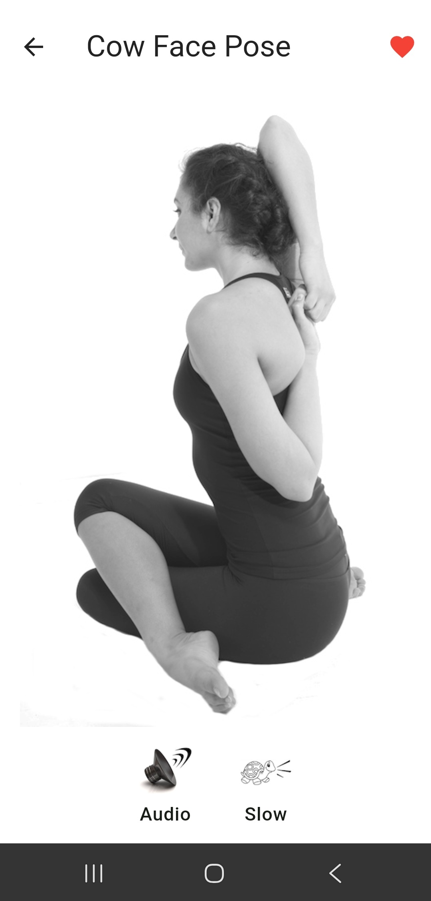
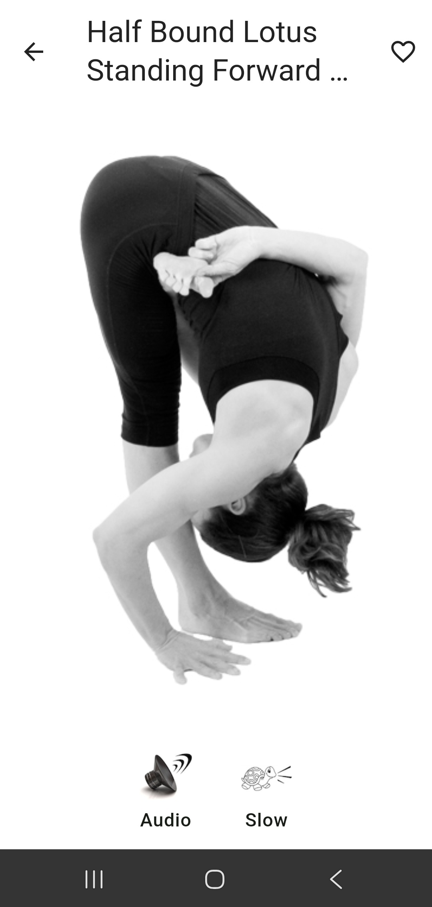
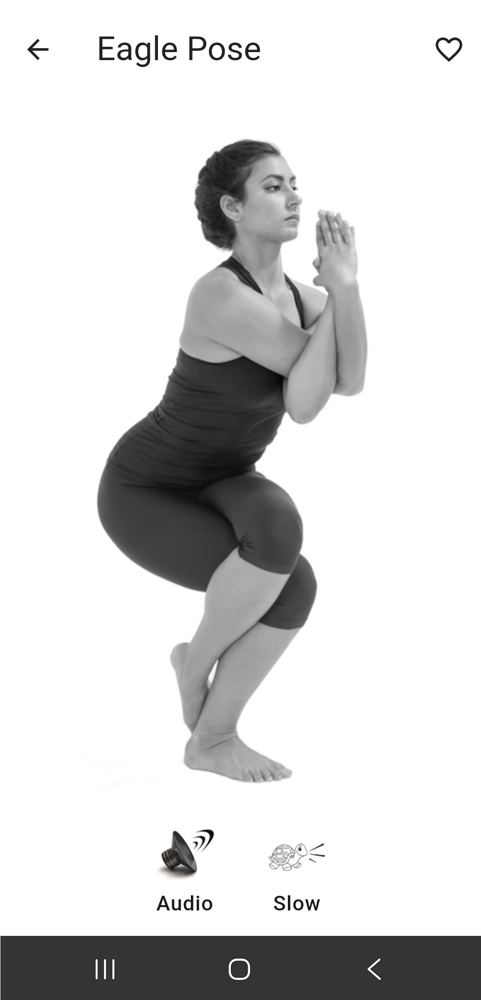
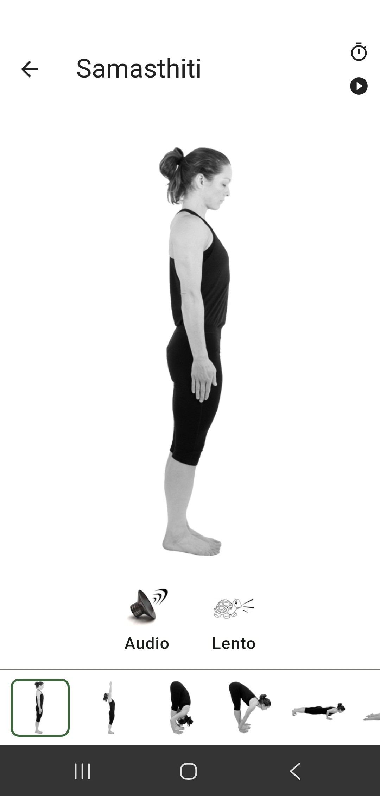
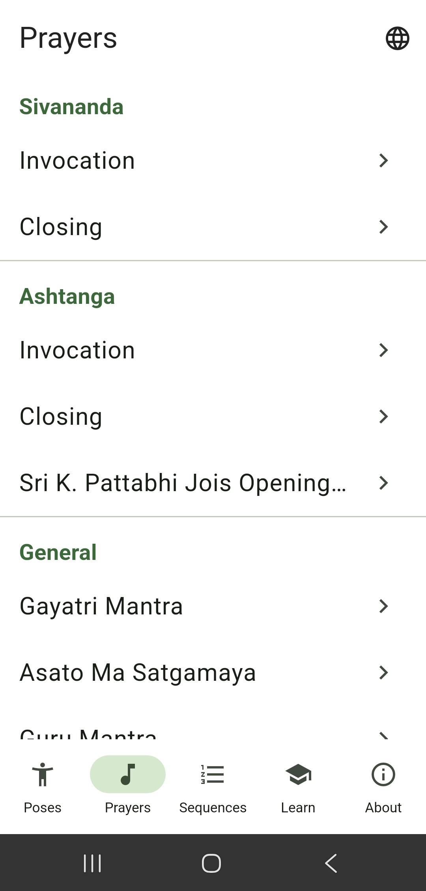
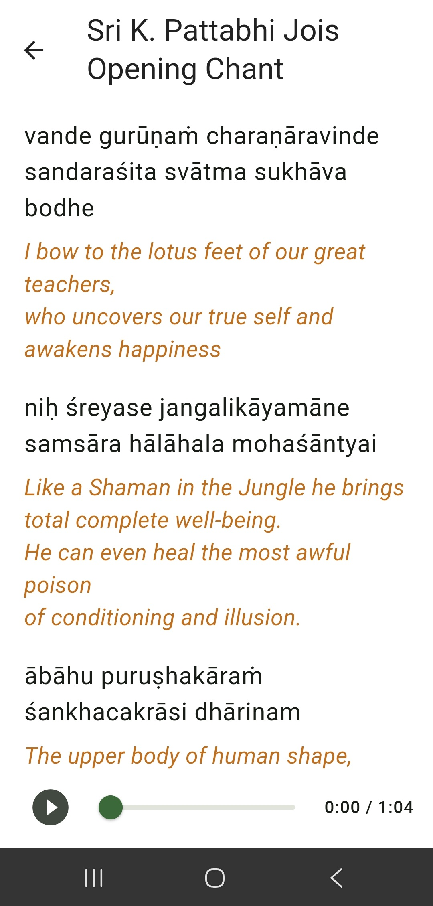
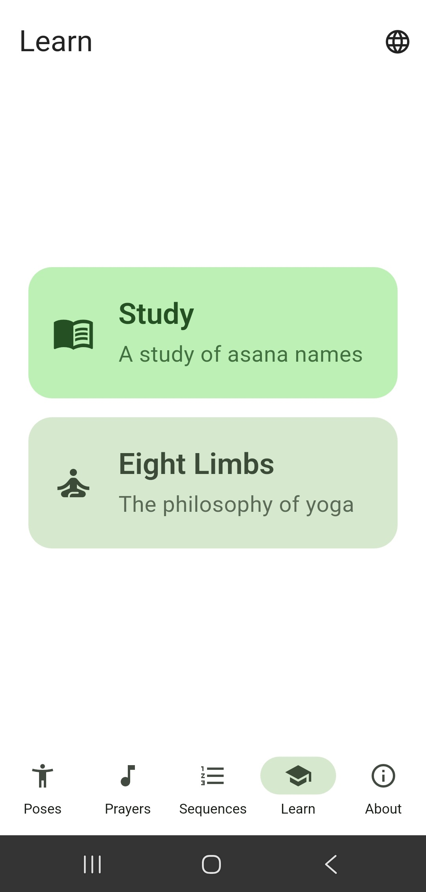
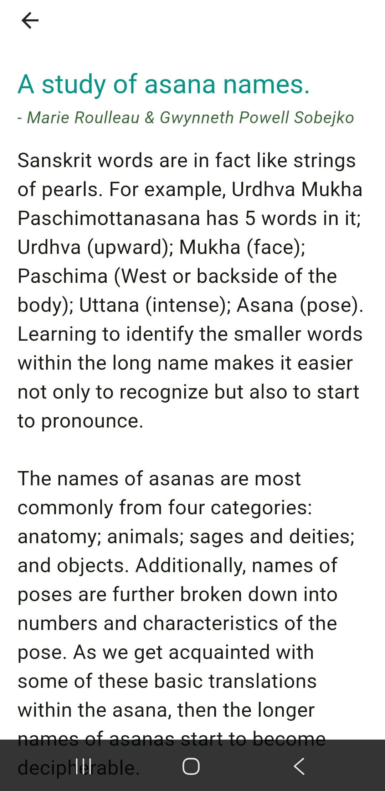
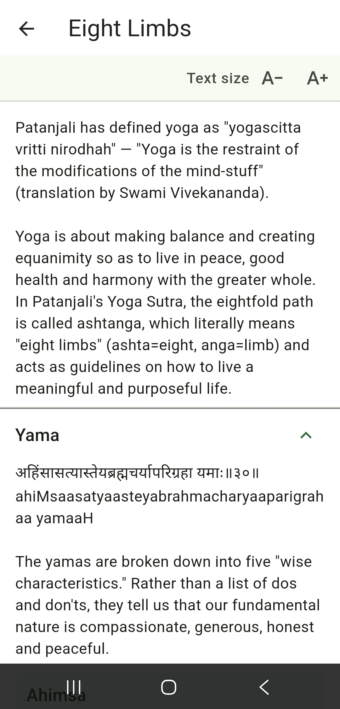

Sanskrit, simplified
Say every asana name with confidence
Have trouble pronouncing asana names in Sanskrit? Can't figure out what they mean? Don't worry, we've got your back. Yoga 108 helps you learn and pronounce asana names in Sanskrit — with audio you can slow down to make learning easy. Explore Ashtanga, Sivananda and Bikram sequences, each with Sanskrit pronunciation and much more.
Free for iOS & Android · English & Spanish · No ads
A closer look
Inside the app
Clean, distraction-free screens built for learning on the mat.








